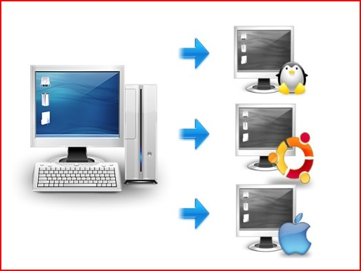
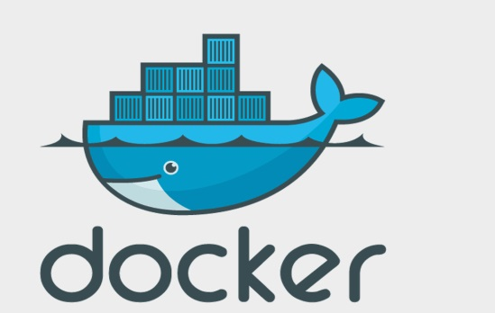

   <!-- About Start -->
   <div class="container-fluid py-5">
    <div class="container py-5">
        <div class="row">
            <div class="col-lg-5">
                
            </div>
            <div class="col-lg-7 mt-4 mt-lg-0">
                <h2 class="position-relative text-center bg-white text-primary rounded p-3 mt-4 mb-4 d-none d-lg-block" style="width: 350px; margin-left: -205px;">25 Years Experience</h2>
                <h6 class="text-uppercase">Jhon_A</h6>
                <h1 class="mb-4">¿Qué es la virtualización?</h1>
                
                <p>La virtualización es una tecnología que permite crear servicios de TI útiles, con recursos que están tradicionalmente limitados al hardware. Gracias 
                    a que distribuye las funciones de una máquina física entre varios usuarios o entornos, posibilita el uso de toda la capacidad de la máquina.</p>
                    <h1 class="mb-4">Tipos de  virtualización </h1> 
                     
                <a href="" class="btn btn-primary mt-2">Virtualización de los datos</a>
                <p>Los datos que se encuentran distribuidos en varias ubicaciones pueden consolidarse en una sola fuente. La virtualización de los datos posibilita que las empresas
                     los traten como si fueran un suministro dinámico, ya que proporciona funciones de procesamiento que permiten reunir datos de varias fuentes, incorporar fuentes
                      nuevas fácilmente y transformar los datos según las necesidades de los usuarios.</p>
                      <div class="col-lg-5">
                        
                    </div>
                      <a href="" class="btn btn-primary mt-2">Virtualización de escritorios</a>
                <p>La virtualización de escritorios suele confundirse con la virtualización de los sistemas operativos, la cual permite implementar muchos de estos en una sola máquina.
                     Sin embargo, la primera posibilita que un administrador central o una herramienta de administración automatizada implementen entornos simulados de escritorio en 
                     cientos de máquinas físicas al mismo tiempo.</p>
                     <div class="col-lg-5">
                        
                    </div>
                     <a href="" class="btn btn-primary mt-2">Virtualización de los servidores</a>
                <p>Los servidores son computadoras diseñadas para procesar un gran volumen de tareas específicas de forma muy efectiva para que otras computadoras (portátiles o de escritorio) puedan 
                    ejecutar otros procesos. La virtualización de un servidor, que implica dividirlo para que sus elementos puedan utilizarse para realizar varias tareas, permite ejecutar más funciones 
                    específicas.</p>
                    <div class="col-lg-5">
                        
                    </div>
                      <a href="" class="btn btn-primary mt-2">Virtualización de los sistemas operativos</a>
                <p>Los sistemas operativos se virtualizan en el kernel, es decir, en sus administradores centrales de tareas. Es una forma útil de ejecutar los entornos de Linux y Windows de manera paralela.
                     Las empresas también pueden insertar sistemas operativos virtuales en las computadoras.</p>
                     <div class="col-lg-5">
                        
                    </div>
                     <a href="" class="btn btn-primary mt-2">Virtualización de las funciones de red</a>
                <p>La virtualización de las funciones de red (NFV) separa las funciones clave de una red (como los servicios de directorio, el uso compartido de archivos y la configuración de IP) para distribuirlas 
                    entre los entornos. Cuando las funciones del software se independizan de las máquinas físicas donde se alojaban, las funciones específicas pueden empaquetarse en una nueva red y asignarse a un entorno.</p>
                    <div class="col-lg-5">
                        

                        
                        <a href="" class="btn btn-primary mt-2">¿Que es el Docker?</a>
                <p>El término "Docker" se aplica a diferentes conceptos, entre los que se incluyen un proyecto de la comunidad open source y sus herramientas; Docker Inc., la principal empresa promotora del proyecto; 
                    y las herramientas que la empresa respalda formalmente.</p>
                    <div class="col-lg-5">
                        
                    </div>
            </div>
        </div>
    </div>
</div>
<!-- About End -->